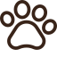

    <div class="navbar">
        <h1 id="paaotsikko">Ramsen kotisivut</h1>

        <nav> <!-- nav on semmone elementti joka sisältää linkkejä -->
        <ul class="navbarlinkit">   <!-- ul on unordered list -->
            <li><a href="index.html" class="theme-link">Etusivu</a></li> <!-- li on list item -->
            <li><a href="info.html" class="theme-link">Tietoja minusta</a></li> <!-- a on linkki -->
            <li><a href="gallery.html" class="theme-link">Galleria</a></li>
            <li><a href="" class="theme-link">Rotutieto</a></li>
            <li><a href="" target="_blank">Tietokilpailu</a></li>
            <li><a href="" target="_blank">Jätä kommentti</a></li>
            
        </ul>
    </nav>

    <!-- tähän koitetaan switch nappia -->
    <button id="switch">Vaihda teema</button>
    <script src="assets/javascript/switch.js"></script>
    </div>

    


   